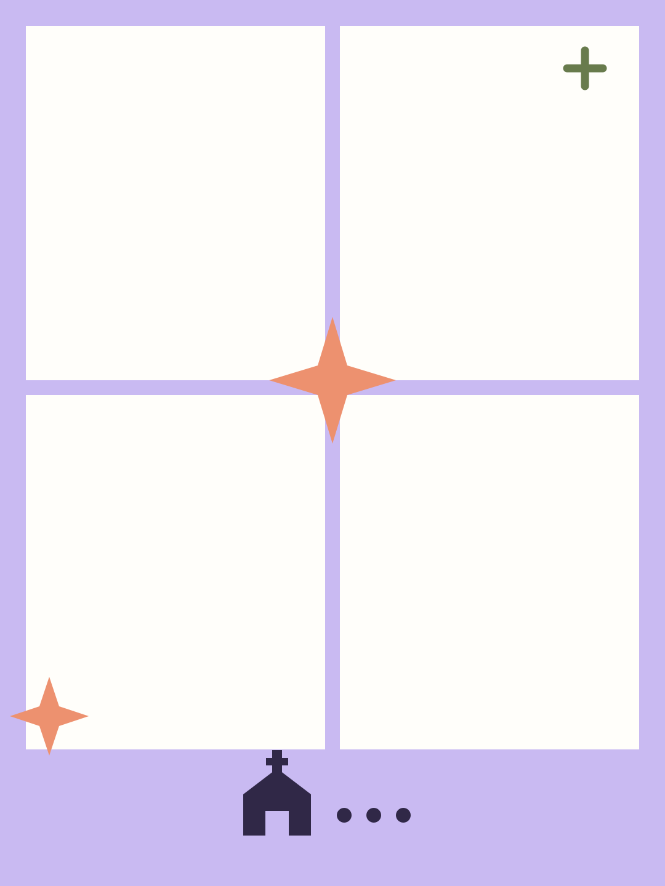

YONSEI STUDIO우리의 순간을 모으다
01 · 카메라 준비
사진을 찍기 위해 카메라 접근이 필요해요.아래 버튼을 누른 뒤 브라우저 안내에서 허용을 선택해 주세요.
마이크·위치·연락처 권한은 요청하지 않아요.최초 한 번 연결하면 다음 이용자는 바로 시작할 수 있어요.
USB 카메라를 연결한 뒤 목록에서 선택해 주세요.
영상이 보이는지, 방향과 구도가 맞는지 확인해 주세요.
카메라를 허용하면 장치 이름과 테스트 영상이 표시돼요.
YONSEI STUDIO


02 · 나만의 사진 준비
설정을 마치면 촬영 화면으로 이동해요.
카메라 접근을 허용하면미리보기가 시작됩니다.
총 8장 촬영 후 원하는 4장을 선택해요.
인쇄 창에서 CP1500과 엽서 용지를 선택해 주세요.날짜·주소가 보이면 ‘사진 파일로 인쇄’ → ‘프린트’를 이용해 주세요.
저장이 안 되면 사진을 길게 눌러 저장해 주세요.
준비되면 카메라를 켜 주세요.
현재 촬영할 자리의 프레임을 확대해서 보여요.
같은 사진도 여러 번 담을 수 있어요. 미리보기의 컷을 누르면 바꿀 수 있어요.
조작이 없어 30초 뒤 사진과 직접 추가한 프레임을 삭제합니다.
연세스튜디오 · 시행일 2026. 9. 26.
운영 주체예두리 · 문의 010-5602-5740
기기 내 처리촬영·합성은 기기에서 처리합니다. QR 보기에 동의하지 않은 사진은 서버로 보내지 않습니다. 이용 종료·페이지 이탈 시 앱의 사진 참조를 정리하며, 2분간 미조작 후 30초 경고를 거쳐 종료합니다. 촬영 중과 인쇄 유예 시간은 제외합니다.
QR 사진 보관에 동의한 경우목적: 다른 기기에서 사진 확인·다운로드. 항목: 촬영 사진 8장과 완성 사진 1장. 보관 기간: 앨범 생성 후 24시간. 만료 즉시 접근을 차단하며, 만료 파일은 정기 삭제 작업으로 삭제합니다(최대 10분 지연 가능). 서버 저장소는 Cloudflare R2를 사용합니다. QR 주소를 가진 사람은 사진을 열 수 있으므로 공개 게시하지 마세요.
삭제 및 선택권QR 저장 동의는 선택 사항입니다. 동의하지 않아도 촬영·저장·인쇄할 수 있습니다. 삭제 요청은 아래 문의처로 연락해 주세요. 기기의 이용 종료는 서버 앨범 삭제와 별개입니다. 직접 다운로드한 파일·인쇄물·수신자가 저장한 사본은 회수되지 않습니다. 개인정보 관련 요청은 위 문의처로 연락해 주세요.